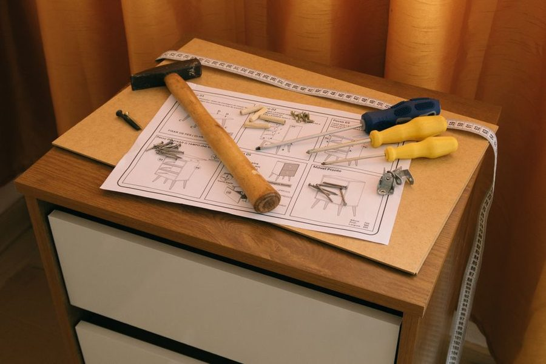

Rev. 1 · 29 abr · leitura de 5 minutos
Nivelar movel em piso torto sem estragar o movel
Piso plano nao existe. O ajuste correto e sempre no movel, com calco, e nunca forcando a estrutura contra o chao.

Movel que balança em tres apoios e um problema geometrico, nao de qualidade da peça: tres pontos sempre encostam, o quarto raramente. Em piso com caimento, o desnivel de dois a tres milimetros por metro e comum e suficiente para o movel bater.
Descubra qual pe esta no ar
Antes de calcar, identifique o apoio solto empurrando cada canto para baixo. O canto que se move e o que precisa de calço. Calcar o canto errado transfere o problema para a diagonal e o movel continua batendo.
Com o pe identificado, meça a folga com uma regua fina ou com o proprio calço escalonado. Anote a espessura: se for maior que cinco milimetros, o problema provavelmente e do piso naquela regiao, e vale conferir tambem o vizinho.
Calço, pe regulavel e feltro
Pe regulavel resolve ate cerca de um centimetro com ajuste fino e e a melhor opcao em movel que sera aberto e fechado. Calço rigido (madeira ou plastico) resolve desniveis pequenos, desde que fique preso e nao ande. Feltro serve para proteger o piso, mas nao serve como calço: ele comprime e o problema volta.
Evite calço improvisado de papelao dobrado ou tampa de garrafa. Os dois cedem com o tempo e o movel volta a balançar, geralmente depois de carregado.
A ordem correta de ajuste
Primeiro nivele o movel vazio, no lugar definitivo. Depois carregue. Depois confira de novo: peso desloca estrutura, principalmente em movel de MDF com fundo fino. Ajustar so uma vez, antes de carregar, e o motivo mais comum de porta desalinhada duas semanas depois.
Em armario com portas, o nivel se confere pelas frestas: fresta que abre em cunha significa que a estrutura ainda esta fora de esquadro ou fora de nivel. As frestas denunciam antes do nivel de bolha em peças altas.
Parede tambem entra na conta
Movel encostado numa parede que foge do prumo vai formar um vao em cima ou embaixo. Rodape existente aumenta o problema: o movel encosta no rodape e afasta a parte de cima. O ajuste padrao e recortar o rodape na regiao ou usar um espaçador atras da base, mantendo o movel no prumo.
Em movel alto ou pesado, prumo importa mais do que nivel: um armario levemente inclinado para frente e um risco real de tombamento. Fixacao na parede com suporte adequado deve ser regra em qualquer peça alta, principalmente com criança em casa.
Quando parar de ajustar
O objetivo e o movel nao balançar, as portas fecharem alinhadas e nada estar inclinado para frente. Perseguir o nivel absoluto num piso com caimento so gasta tempo: o piso nao vai mudar, e o olho nao percebe um milimetro por metro.
Este texto e revisado quando a pratica mostra que a recomendacao nao se sustenta. A revisao vigente esta indicada no topo da folha.